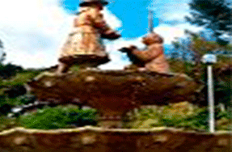
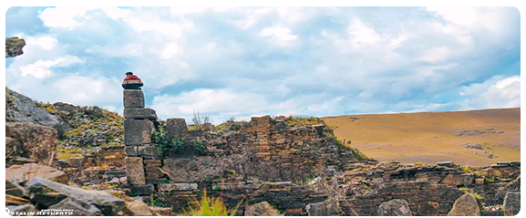
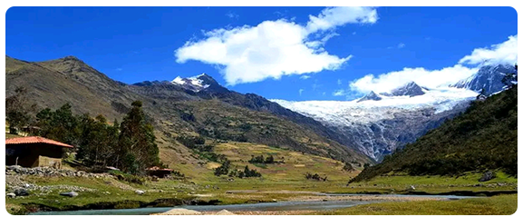
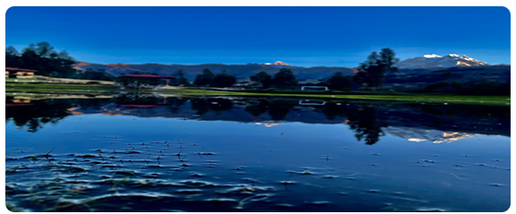

|
|  | Pomabamba es una ciudad ubicada en la region Ancash ,Peru, conocida por su rica historia y paisaje naturales.Fue fundada durante le epoca colonial española y ha tenido relevancia historica por su participacion en movimientos independientes. La ciudad tambien es reconocida por su arquitectuira colonial, iglesias antiguas y festividades tradicionales que reflejan la cultura andina de la region. |
|  |
Fortaleza de Yaino |
|  | JancapampaAmanece en Pomabamba. Las calles de esta provincia construidas en una inmensa llanura andina, permanecen durmiendo, pero a medida que el sol se levanta, las sombras de la noche empiezan a desaparecer y con ello un pueblo entero despierta. Escucho cánticos de los pájaros, un gallo y muchas voces, observo señoras que llegan con pastos para las primeras ventas del día y al preguntarles, me responden que allá en la plazuela de Yanapampa, me espera una combi; camino unas cuantas cuadras hacía el norte y veo a muchos profesores que buscan la forma de acomodarse en la combi para viajar. Son las seis y cuarto de la mañana y es hora de partir dejando atrás las calles de la ciudad de Pomabamba para seguir por una carretera de trocha hacia mi destino, “Jancapampa” |
|  |
jacabambaDurante el confederado konchukano, Piscobamba fue la Capital civil, Chavin de Huantar el centro religioso y Yayno la Capital Militar, como los Incas ya habían causado la desmoralización total, los españoles al entra por Huánuco rápidamente se adueñaron y lo convierten a Piscobamba como capital del partido de Konchukos Bajo; luego con engaños sometieron a los indios a la vida de esclavos, cometiendo toda clase de abusos en nombre de Dios; al concebir tales ignominias Santo Toribio de Mogrovejo, Arzobispo del Perú tuvo que priorizar el Sínodo el año de 1,594, fecha en la que, recién aparece el nombre de Pomabamba con 104 tributarios indios y se denomina San Juan Bautista de Pomabamba. |
NOMBRES Y APELLIDOS: LUZ LAURA NICOLAS SOLORZANO |
CORREO: Luzsolorzano2005@gmail.com |